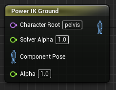
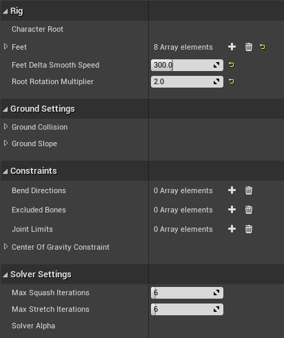
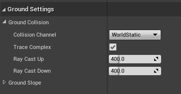
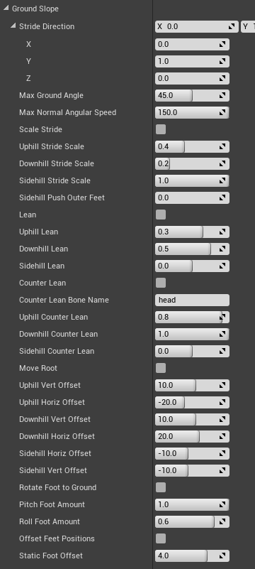

Grounding
Power IK comes with a dedicated Anim Graph node for contouring your creatures to uneven terrain.

Video Tutorial
The easiest way to learn how to use the Ground Node is to see it in action in our video tutorial. The video tutorial demonstrates the process of adding ground alignment to the Unreal 3rd person Mannequin.
How it Works
The Power IK Ground node uses the Power IK Solver to generate a new pose given updated foot positions that are on the ground.
It helps to understand the basic algorithm for ground alignment:
For each Foot:
Calculate foot location in world space
Cast a ray from this location
If ray hits collider:
Smoothly move the effector towards hit point
Run solver using new effector locations
As you can see, because it is based on raycasts, you have to make sure that your collision filtering and level collision is setup to support good ground IK.
How to Setup Grounding
For a complete overview of the setup process for Power IK Ground Alignment, checkout the video tutorial.
Setup a Ground Node
- Create a Power IK Ground node.
- Set the name of the Character Root bone on the node.
- Select the node and open the Details section.
- Add to the Feet list and set Bone Name to the name of the foot bone.
- Set the Collision Trace Channel in the Ground Collision settings.

At this point, Power IK will stick the feet to the ground, pulling the whole body if necessary by translating the Character Root bone.
The following settings can be used to tune the Ground alignment behavior. Many of these settings are identical to the Power IK Solver settings (since the Ground node is just a different wrapper around the core solver).

How to Choose a Character Root Bone
The Character Root bone is the top-most bone in the skeleton that represents the "Center of Gravity" of the body. This is usually located between the legs at the base of the spine.
In the Unreal mannequin, this is called the "Pelvis". It may also be called "Hips", "Body", "COG" or anything else depending on the rig naming convention.
It is crucial that the Character Root bone moves the entire skin when translated. Typically, this is the ONLY bone in the skeleton that does translate.
It's position is also important. For good results, it should be located at the base of the spine and have all leg(s), spine(s) and tail(s) as children of it. Usually the Character root bone is not the same as the actual root bone (the top most bone in the hierarchy).
If you are unsure which bone to use, open the Skeleton editor and follow the foot bone up the hierarchy until you reach the first bone that contains the spine and the legs. Select it and translate it to make sure that it has the desired behavior of moving the whole character from a location near the center of gravity for the creature.
Exclude Bones
Some skeletons may have multiple bones at the Character Root level and they may even lie ontop of each other. It is important that no bones between the Character Root and the feet are located directly ontop of each other (in the path of lineage from the feet to the root). If they are, add them to the Excluded Bones list.
Also locate any "twist" or helper bones that are located in the path from the feet up to the Character Root. If the helper bones are between the leg bones, they must be excluded or else Power IK will treat them as an additional leg bone and bend them!
(Optional) Delta Smooth Speed
The Ground Node exposes the Delta Smooth Speed of the foot effectors. This value controls how quickly the feet adapt to changing terrain height (measured in cm/s).
If you notice the feet gradually sliding towards the ground height, increase this value until it's no longer noticable. Typically values between 100 and 400 cm/s are suitable for this parameter.
(Optional) Pull Weight and Pull Factors
Setting the Pull Factors in X and Y to zero (the default) prevents the effector from yanking the body around when the feet have to reach up or down a slope.
If you set Z to zero as well, it will prevent the solver from pulling the hips of the character to reach for the ground. This could leave your character floating if the ground is far away from the capsule, though typically this never happens.
For creatures with many limbs (like spiders), it may actually be nice to have the limbs pulling the body. For bipeds though, it is typically best to turn PullWeight off completely and let the slope alignment settings move the hips for you.
Note: If you notice the hips being yanked around by the feet, try adjusting the PullWeight and Pull Factors.
Setup a Collision Trace Channel
You have to tell PowerIK what surfaces the ground rays should collide with. These settings may be project specific. For default Unreal settings, the following procedure should ensure correct collision filtering for Unreal characters with a capsule:
- In Unreal go to Edit > Project Settings > Collision
- Click New Trace Channel
- Name it IKTrace and set Default Response to Block
- Open the Preset section of the Collision settings.
- Double-click Pawn and set IKTrace to Ignore then click Accept.
- Set the IKTrace to Ignore Character Mesh presets as well.
- Locate and select the Power IK Solver node and open the Details panel
- Open the Ground Settings Collision Channel and set it to: IKTrace
Note: It may be necessary to also tell the Character capsule to ignore the IKTrace channel
Now Tune the Slope Settings
- Select the solver node and in the details pane find the Ground Slope section.
- Tune these settings to achieve the desired ground alignment behavior.
See the Ground Slope Settings section for details on what each of these parameters do.
Interactive Tuning
You can adjust the slope settings interactively while playing in editor. Simply open the Animation Blueprint, select your character and adjust the slope settings. You must Compile the animation blueprint between parameter adjustements to see the effect while playing in editor.
It can be useful to place a cube underneath your character that you can rotate freely as you tune slope settings interactively.
Collision Settings

All the Grounding settings are found by selecting the solver node and opening the details panel:
- Ground Plane Bone: the name of the bone that represents the “ground plane” in your animation. Typically this is just the root bone, but you can use a separate bone if you want. The height of the effector relative to this plane is always maintained. So if the animation pulls the characters foot 10cm above the ground plane, then the foot will be 10cm above the ray cast hit location.
- Collision Channel: this is the level collision channel that the rays are collided against. Make sure that the level is setup with collision on this channel for the character to collide with.
- Trace Complex: whether to trace against Complex or Simple collision geometry. Complex is usually preferred, though slightly more expensive.
- Ray Cast Up: the distance in centimeters to cast upwards looking for terrain to stand on.
- Ray Cast Down: the distance in centimeters to cast downwards looking for terrain to stand on.
Slope Settings

- Vec3 StrideDirection: Normalized vector that describes the direction of travel. This vector points in the forward facing direction of your character and usually remains constant.
- MaxGroundAngle: Maximum angle relative to gravity vector to apply leaning and stride scaling.
Stride Scaling
These settings scale the stride of the foot effectors. Essentially making the character take longer or shorter steps.
-
ScaleStride bool: If true, stride of IsGrounded effectors will be scaled in Stride Direction.
-
UphillStrideScale float: Amount to scale stride when going uphill. Range is 0-1. Default 0.4.
-
DownhillStrideScale float: Amount to scale stride when going downhill. Range is 0-1. Default 0.2.
-
SidehillStrideScale float: Amount to scale stride when on a side-hill. Range is 0-1. Default 1.0.
-
SidehillPushOuterFeet float: Amount (in centimeters) to push outside feet outwards on sidehills. Default is 20.0.
-
SidehillPushInnerFeet float: Amount (in centimeters) to push inside feet outwards on sidehills. Default is 10.0.
Leaning
These settings rotate the spine of the character to lean into or away from a slope.
-
Lean bool: If True, character root bone is rotated in opposite direction of ground normal.
-
UphillLean float: Amount to lean forward when going uphill. Range is 0-1. Default 0.3.
-
DownhillLean float: Amount to lean backward when going downhill. Range is 0-1. Default 0.5.
-
SidehillLean float: Amount to lean sideways into side-hills. Range is 0-1. Default 0.0.
Counter Leaning
These settings are designed to allow the head of the character to counteract the spine leaning adjustments. This prevents characters from looking straight down when leaning into an up hill, or straight up when leaning back on a downhill.
-
CounterLean bool: If True, will counter lean CounterLeanBone. Usually this is the head.
-
CounterLeanBoneName Name:Name of base of counter lean bone. Usually this is the base Head bone.
-
UphillCounterLean float: Amount to counter lean backward when going uphill. Range is 0-1. Default 0.8.
-
DownhillCounterLean float: Amount to counter lean backward when going downhill. Range is 0-1. Default 1.0.
-
SidehillCounterLean float: Amount to counter lean sideways into side-hills. Range is 0-1. Default 0.0.
Root Offset
These settings let you offset the position of the root bone above the foot effectors. It's useful to be able to push the root forward/back and up and down in reaction to the slope.
-
MoveRoot bool: If True, character root bone position is gradually pushed vertically and horizontally.
-
UphillVertOffset float: Amount (in centimeters) to push the character root up/down when going UP hill. Default 10.0.
-
UphillHorizOffset float: Amount (in centimeters) to push the character root forward/back when going UP hill. Default -20.0.
-
DownhillVertOffset float: Amount (in centimeters) to push the character root up/down when going DOWN hill. Default 10.0.
-
DownhillHorizOffset float: Amount (in centimeters) to push the character root forward/back when going DOWN hill. Default 20.0.
-
SidehillVertOffset float: Amount (in centimeters) to push the character root up/down when on a SIDE hill. Default -10.0.
-
SidehillHorizOffset float: Amount (in centimeters) to push the character root forward/back when on a SIDE hill. Default -10.0.
Foot Rotation
It is useful to be able to control the rotation of the foot pitch and roll independently. Creatures usually orient the pitch of their foot to the ground, but only slightly roll the foot to the ground.
-
RotateFootToGround bool: If True, feet are oriented to ground normal.
-
PitchFootAmount float: Amount to pitch foot to orient to up/down hills. Range is 0-1. Default 1.0.
-
RollFootAmount float: Amount to roll foot to orient to sidehills. Range is 0-1. Default 0.6.
Foot Offset
The Foot Offset feature is useful for nudging feet in the direction of the ground normal so that they come into contact with the ground surface precisely.
By default, Power IK maintains the distance of the foot bone relative to the XY plane. Applying an offset may be necessary if the character was not modeled to stand exactly on this plane in the reference pose.
- Offset Feet Positions bool: If True, feet positions are offset in direction of ground normal.
- Static Foot Offset float: Amount in centimeters to push feet in direction of ground normal.